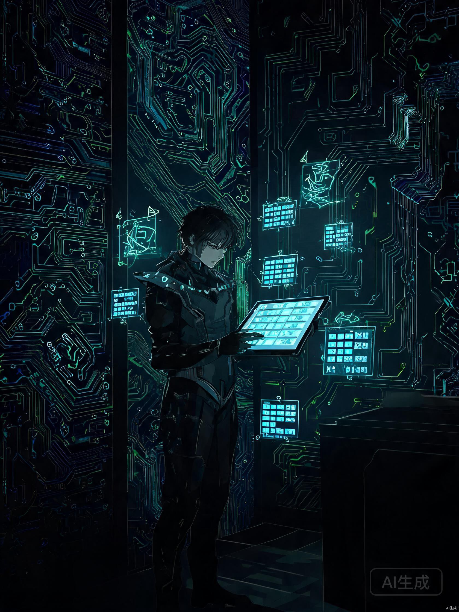
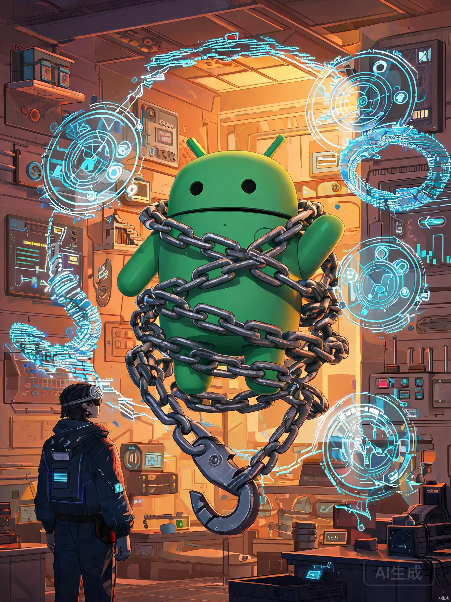
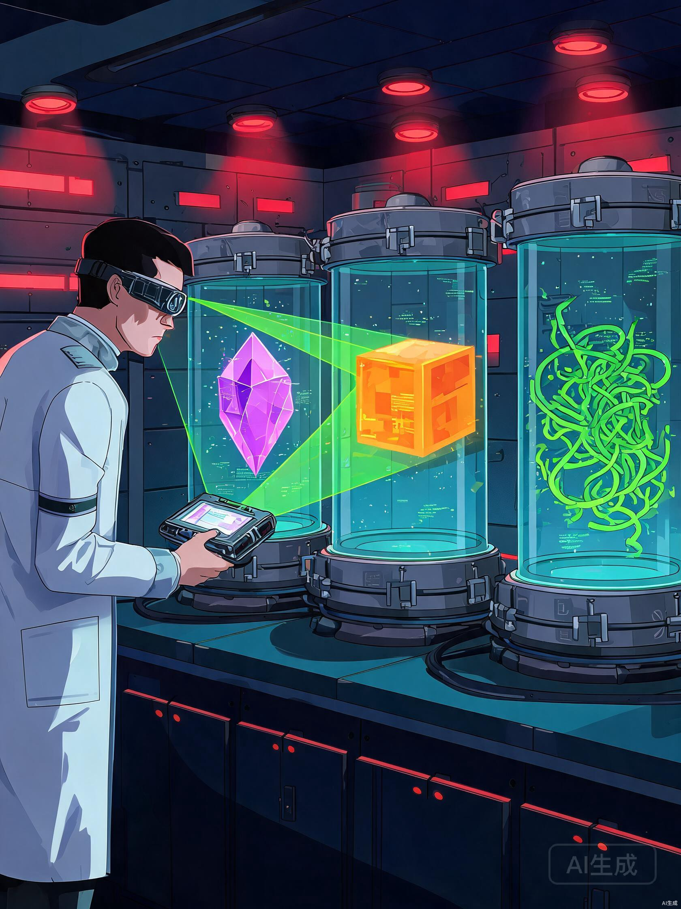
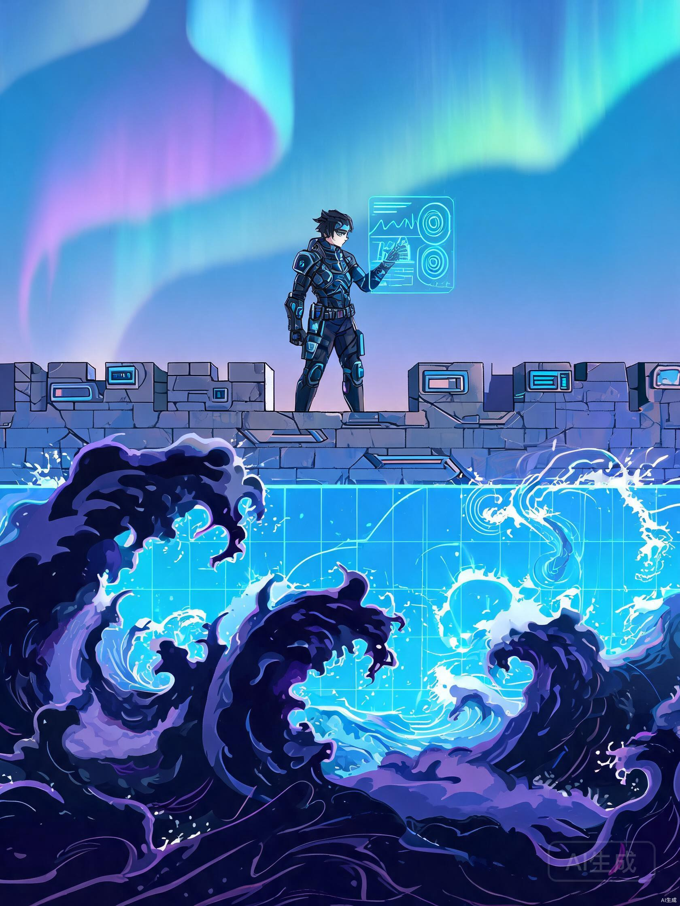

你叫林渊，一个在安全圈里还算有点名气的"野路子"。会 JavaScript，摸过 Android 逆向的门道，甚至拆过几个 APK 的壳——但你知道，这些远远不够。你的目标很明确：手游反作弊安全分析岗，月薪三到六万的资深岗。
但那道门槛，看起来像一座黑铁堡垒。
你深吸一口气，推开了堡垒的第一道门。

门后是一个幽暗的地下大厅。墙壁上刻满了密密麻麻的符号——ARM64 汇编指令。一个身披灰色斗篷的守关者坐在大厅中央，背后漂浮着巨大的全息投影，上面显示着寄存器名字：X0, X1, X2 ... SP, PC, LR。
你抬头看着那些指令。MOV、ADD、STR、LDR、BL、B、CBZ、CBNZ... 密密麻麻如同外星文字。
ARM/ARM64 汇编核心指令和调用约定 硬通货
- 掌握数据传送指令（MOV, MOVK, MOVZ）、算术逻辑指令（ADD, SUB, AND, ORR）、内存访问指令（LDR, STR, LDP, STP）
- 理解条件跳转与比较（CMP, CSEL, CSET, B.cond, CBZ, CBNZ）
- ARM64 调用约定：前 8 个参数通过 X0-X7 传递，返回值在 X0，栈帧对齐 16 字节
- SP（栈指针）、LR（链接寄存器）、PC（程序计数器）的角色与变化时机
- 能够从一段汇编中识别出循环结构、条件分支、函数调用链
守关者递给你一把发光的钥匙——那是一个编译好的 SO 文件。
🎯 第一关任务清单
- 每天读 50 行 ARM64 汇编，用 AI 逐行解释，然后不看解释自己复述含义
- 写一个简单 SO：C 函数 -> 编译 -> IDA 打开 -> 对比 C 和汇编
- 跟踪 SO 加载流程：在 dlopen -> JNI_OnLoad 设断点，画出完整流程图
- 理解 ELF 格式：Section Header / Program Header / 重定位表的含义
- 理解 Linker 原理：动态链接时 GOT/PLT 如何解析外部符号
Android SO 加载流程与 Linker 原理 硬通货
- 理解 dlopen 的完整流程：文件映射 -> PT_LOAD 段加载 -> 重定位处理 -> JNI_OnLoad 调用
- 掌握 Linker 如何处理延迟绑定（Lazy Binding）和 GOT 表填充
- 理解 ELF 文件的核心结构：ELF Header, Program Header, Section Header, Symbol Table, Relocation
- 知道为什么 Hook 时需要关注 PLT/GOT 的时机问题
AI 加速方式
把汇编代码贴给 AI，让它逐行解释每条指令的作用和操作数含义。让 AI 生成 ARM64 指令速查卡，打印出来贴在桌边。让 AI 解释编译器优化策略（如指令重排、循环展开），帮你理解为什么编译后的汇编和 C 代码"长得不一样"。
一个月后，你终于能流畅地阅读墙上的汇编符号了。守关者点头，身后的门缓缓开启。你听到远处传来金属碰撞的声音。

穿过第一道门，你来到一个巨大的锻造工坊。空气里弥漫着电焊的气味，四处是悬浮的全息蓝图和嗡嗡作响的机械臂。一个戴着护目镜的工匠正在组装一把闪烁着蓝光的长剑。
工匠把三块金属胚料扔到你面前：一块刻着"Frida"，一块刻着"IDA"，一块刻着"Python"。
Frida 脚本开发 AI 辅助
- Java 层 Hook：Hook Activity 生命周期、Hook 加密/签名校验方法
- Native 层 Hook：Interceptor.attach 拦截 SO 导出函数、修改参数和返回值
- JNI 跟踪：Hook JNI_OnLoad、RegisterNatives，追踪 Java 方法到 Native 的映射
- 反检测绕过：对抗 Frida 检测（端口隐藏、线程名修改、so 注入隐藏）
- 内存操作：读取/修改进程内存、dump dex 和 SO
IDA 自动化与逆向分析 AI 辅助
- IDAPython 脚本：批量重命名函数、提取字符串交叉引用、自动化标注
- 控制流分析：看懂 IDA 的函数调用图（XREF）和基本块结构
- 快速定位：通过字符串搜索、导入表分析、JNI 函数签名定位关键代码
- 反混淆基础：识别简单的控制流混淆和字符串加密模式
工匠教你的方式很直接——做一个小任务，用 AI 生成初版脚本，然后自己修改和调试。
🎯 第二关任务清单
- Frida 每日一练：每天用 Frida 做一个小任务（Hook 一个方法、dump 内存、绕过检测）
- IDA 脚本开发：用 IDAPython 写批量重命名、字符串提取、交叉引用工具
- 构建 SO 分析器：Python 工具，输入 SO 路径 -> 输出可疑函数列表
- 理解 Hook 底层：Inline Hook 的指令覆盖和跳转修复原理、ARM64 调用约定下的寄存器保存
Hook 原理的底层理解 硬通货
- Inline Hook：在目标函数入口覆盖指令，跳转到自己的函数，执行完后跳回
- PLT/GOT Hook：修改 GOT 表中的函数地址，替换为目标函数指针
- ARM64 调用约定：被调用者保存寄存器（X19-X28, X29/FP）、栈对齐、返回值传递
- 调试崩溃定位：能判断是 Hook 点选错还是调用约定搞混
AI 加速方式
描述你的 Hook 需求，让 AI 生成完整的 Frida 脚本。描述你的分析目标，让 AI 生成 IDAPython 自动化脚本。描述工具需求，让 AI 生成 Python/Node.js 工具原型。但每一行代码你都要能看懂、能修改、能解释。
又一个多月过去了。你的"武器库"越来越充实——Frida 钩链、IDA 透视镜、还有一台自动化的分析引擎。工匠拍了拍你的肩膀，指向工坊深处的一扇厚重铁门。

铁门之后，是一个巨大的实验室。数百个密封舱排列在两侧，每个舱里都封存着一个发光的"样本"——有的是 APK 晶体，有的是 SO 方块，有的是蠕动的脚本触手。一位穿白大褂的研究员正在扫描台前忙碌。
研究员指了指墙上的一行大字："3-5 个完整案例，覆盖不同类型"
| 样本类型 | 来源建议 | 分析重点 | 难度 |
|---|---|---|---|
| 开源修改器 | GitHub 搜 "game hack"、"memory editor" | 理解内存搜索和修改原理 | ⭐ |
| 老游戏外挂 | 停服/小众游戏的外挂（安全合法） | 完整走一遍样本到报告的流程 | ⭐⭐ |
| 自写 Demo | 自己写一个简单透视/自瞄 Demo，然后逆向 | 最安全可控，深度理解实现原理 | ⭐⭐ |
| 脚本辅助类 | Auto.js 或触摸精灵的脚本 | 理解非注入型作弊的检测思路 | ⭐ |
你开始逐一打开密封舱。
你拿起第一个样本——一个开源的内存修改器。用 AI 帮你生成批量处理脚本快速提取了字符串和导入表，然后你自己在 IDA 中追踪关键函数。几个小时后，你对这个修改器的每一个数据流都了如指掌。
动态调试的手感 硬通货
- Ptrace 附加进程：理解 attach 的系统调用流程和权限
- 断点策略：知道在什么位置下断点（函数入口、关键判断分支、返回前）
- 观察-假设-验证循环：每次调试都是一个科学实验，不是瞎跑
- 寄存器和内存观察：知道什么时候该看什么寄存器/内存区域
- 单步 vs 运行到：判断什么时候单步跟踪，什么时候直接跑到目标位置
对抗直觉 硬通货
- 异常嗅觉：看到不该导入的函数却导入了、本该加密的字符串是明文——这些"不对劲"的感觉
- 独立设计分析路径：拿到未见过的样本，能自行决定先看什么、后看什么、重点在哪
- 理解外挂作者的思路：站在攻击者角度思考，哪些点是检测的薄弱环节
🎯 第三关任务清单
- 完成 3-5 个完整案例分析，每个案例都走完从样本到报告的全流程
- 每个案例撰写完整报告：能面试讲 15 分钟的技术细节
- 覆盖不同类型：注入型、修改型、脚本型、网络协议型
- 积累反调试对抗经验：每个样本的反调试手段都不同，记录并归类
AI 加速方式
让 AI 帮你写批量处理脚本，快速提取 SO 的字符串/导入表/函数列表。把 IDA 反汇编代码贴给 AI，让它帮你梳理控制流逻辑。分析完成后，让 AI 帮你结构化报告，你负责填写技术细节。
两个月的实验室生活，你积累了四个完整案例。从开源修改器到老游戏外挂，从自写 Demo 到脚本辅助，每一种类型你都亲手解剖过。研究员在你的档案上盖了一个印章：
"样本分析师 — 已通过"

穿过实验室，你登上了一段长长的阶梯。推开最后的门，你站在了一座巨大的城墙之上。城墙的另一边，暗色的能量波——外挂攻击——正一波一波地拍打着蓝色护盾。
一个穿着铠甲的将军站在你身旁。
业务闭环思维 硬通货
- 从分析到检测：每个案例思考检测方案——内存扫描、行为检测、协议校验
- 阈值设计：检测阈值设多少合适？太松放过外挂，太紧误杀玩家
- 误杀率控制：数据分析 + A/B 测试 + 灰度发布的闭环思路
- 游戏业务理解：理解游戏的核心玩法、经济系统、竞技公平性需求
- 三角交叉能力：技术实现 + 数据分析 + 游戏业务逻辑
🎯 第四关任务清单
- 分析 -> 检测转化：对每个已分析案例，设计对应的检测方案
- 数据量化思维：设计检测指标、阈值、误杀率控制思路
- 模拟面试：把案例讲给朋友听或录音，确保逻辑清晰
- 简历包装：突出案例数量、技术深度、闭环思维
你在城墙上，把你分析过的每一个外挂都转化成了一份防御方案。内存修改器？用内存完整性扫描。SO 注入？用加载器白名单和签名校验。脚本辅助？用行为模式分析。每份方案里，你都写了检测指标、合理阈值、误杀控制策略。
回望来路，你走过的每一步都对应着这个岗位的核心能力要求。AI 是你最强大的加速器——它帮你快速生成脚本、解释汇编、结构化报告——但真正让你过关的，是你亲手磨砺出来的判断力、调试手感、对抗直觉和业务闭环思维。
完整技能路线图
flowchart TD
subgraph M1["第1月：底层解码"]
A1[ARM64 汇编核心指令]
A2[ARM64 调用约定]
A3[ELF 格式理解]
A4[SO 加载与 Linker]
A5[写简单 SO -> IDA 对比]
end
subgraph M2["第2月：锻造工坊"]
B1[Frida Java 层 Hook]
B2[Frida Native 层 Hook]
B3[JNI 跟踪与反检测]
B4[IDA 脚本自动化]
B5[Python SO 分析器]
B6[Hook 底层原理]
end
subgraph M34["第3-4月：样本实验室"]
C1[开源修改器分析]
C2[老游戏外挂分析]
C3[自写 Demo 逆向]
C4[脚本辅助分析]
C5[动态调试手感]
C6[对抗直觉培养]
C7[完整分析报告 x5]
end
subgraph M5["第5月：守护城墙"]
D1[分析 -> 检测方案]
D2[阈值与误杀控制]
D3[游戏业务理解]
D4[模拟面试准备]
D5[简历包装]
end
M1 --> M2 --> M34 --> M5
style A1 fill:#f87171,stroke:#f87171,color:#fff
style A2 fill:#f87171,stroke:#f87171,color:#fff
style A3 fill:#f87171,stroke:#f87171,color:#fff
style A4 fill:#f87171,stroke:#f87171,color:#fff
style B6 fill:#f87171,stroke:#f87171,color:#fff
style C5 fill:#f87171,stroke:#f87171,color:#fff
style C6 fill:#f87171,stroke:#f87171,color:#fff
style D3 fill:#f87171,stroke:#f87171,color:#fff
style B1 fill:#818cf8,stroke:#818cf8,color:#fff
style B2 fill:#818cf8,stroke:#818cf8,color:#fff
style B3 fill:#818cf8,stroke:#818cf8,color:#fff
style B4 fill:#818cf8,stroke:#818cf8,color:#fff
style B5 fill:#818cf8,stroke:#818cf8,color:#fff
style C7 fill:#818cf8,stroke:#818cf8,color:#fff
style D1 fill:#818cf8,stroke:#818cf8,color:#fff
style D2 fill:#818cf8,stroke:#818cf8,color:#fff
style D4 fill:#818cf8,stroke:#818cf8,color:#fff
style D5 fill:#818cf8,stroke:#818cf8,color:#fff
style A5 fill:#22d3ee,stroke:#22d3ee,color:#0a0e1a
style C1 fill:#22d3ee,stroke:#22d3ee,color:#0a0e1a
style C2 fill:#22d3ee,stroke:#22d3ee,color:#0a0e1a
style C3 fill:#22d3ee,stroke:#22d3ee,color:#0a0e1a
style C4 fill:#22d3ee,stroke:#22d3ee,color:#0a0e1a
时间线总览
底层解码 — ARM 汇编 + SO 机制
ARM64 指令集、调用约定、ELF 格式、SO 加载流程、Linker 原理、编译对比实验
锻造工坊 — Frida + IDA 精通
Frida Hook 脚本、IDA 自动化、Python 分析工具开发、Hook 底层原理理解
暗影实验室 — 3-5 个完整样本实战
注入型/修改型/脚本型/自写 Demo，全流程分析+报告撰写，积累调试手感与对抗直觉
守护城墙 — 风控闭环 + 面试冲刺
分析转检测、阈值设计、误杀控制、业务理解、模拟面试、简历包装
林渊的故事，也是你的故事。五关，五个守关者，三十多个核心技能点。每个技能点都对应着一份真实的岗位要求。故事结束了，但旅程才刚刚开始。
打开你的终端，写下第一条 ARM 汇编学习笔记。下载 IDA，打开第一个 SO 文件。运行你的第一个 Frida 脚本。
堡垒的门已经打开了。进去吧。